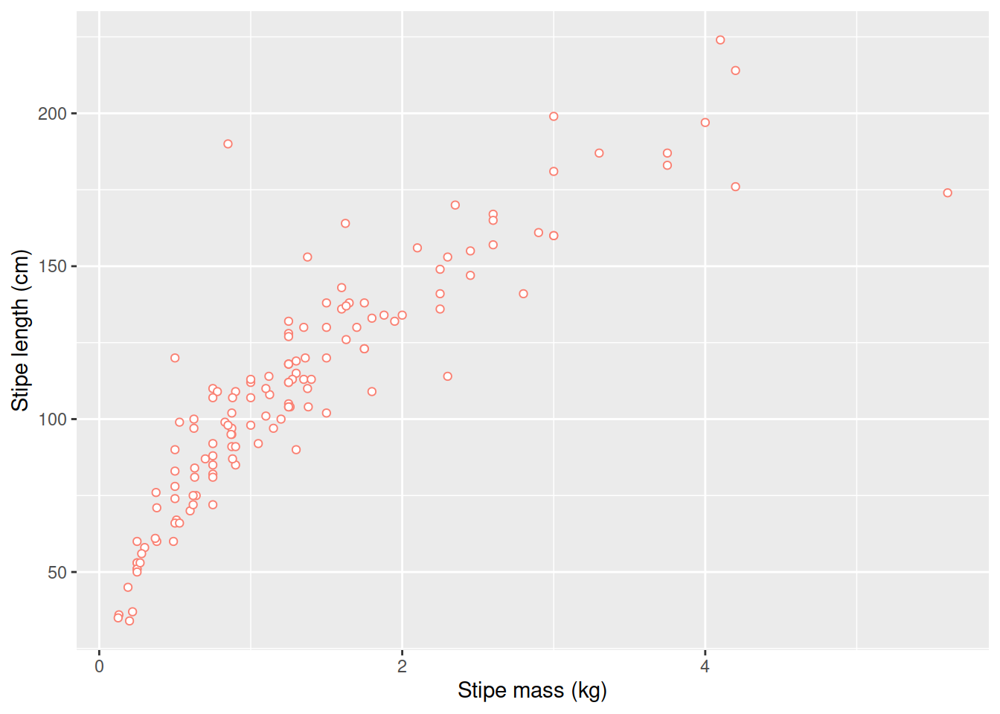

Chapter 6 Exercise:
Create a new data frame from the laminaria dataset that meets the following criteria: contains only the site column and a new column called total_length_half containing values that are half of the total_length. In this total_length_half column, there are no NAs and all values are less than 100. Hint: think about how the commands should be ordered to produce this data frame!
Use group_by() and summarize() to find the mean, min, and max blade_length for each site. Also add the number of observations (hint: see ?n).
What was the heaviest stipe measured in each site? Return the columns site, region, and stipe_length.
6.1 Saving data
A major advantage of R over many other statistics packages is that you can generate exactly the same answers time and time again by simply re-running saved code. However, there are times when you will want to output data to a file that can be read by a spreadsheet program such as Excel (but try not to… please). The simplest general format is .csv (comma-separated values). This format is easily read by Excel, and also by many other software programs. To output a .csv type:
The first argument is simply the name of an object in R, in this case our table (a data object of class table) of counts by region and site (other sorts of data are available, so play around to see what can be done). The second argument is the name of the file you want to write to. This file will always be written to your working directory, unless otherwise specified by including a different path in the file name. Remember that file names need to be within quotation marks. The resultant file can sadly be opened in Excel.
6.2 Visualisations
R has powerful and flexible graphics capabilities. In this Workshop we will not use the traditional graphics (i.e. base graphics in the graphics package automatically loaded in R). We will instead use a package called ggplot2 that has the ability for extensive customisation (see the examples at the beginning of tomorrow’s section), so it will cover most of the graphs that you will want to produce. We will spend the next two days working on our ggplot2 skills. Here is a quick example of a ggplot2 graphic made from two of the kelp variables to show the relationship between them:
ggplot(data = laminaria, aes(x = stipe_mass, y = stipe_length)) +
geom_point(shape = 21, colour = "salmon", fill = "white") +
labs(x = "Stipe mass (kg)", y = "Stipe length (cm)")
6.3 Clearing the memory
You will be left with many objects after working through these examples. Note that in RStudio when you quit it can save the Environment if you choose, and so it can retain the objects in memory when you start RStudio again. The choice to save the objects resulting from an R Session until next time can be selected in the Global Options menu (‘Tools’ > ‘Global Options’ > ‘General’ > ‘Save workspace to .RData on exit’). Personally, we never save objects as it is preferable to start on a clean slate when one opens RStudio. Either way, to avoid long load times and clogged memory, it is good practice to clear the objects in memory every now and then unless you can think of a compelling reason not to. This may be done by clicking on the broom icon at the top of the Environment pane.
Of course, you could remove an individual object by placing only its name within the brackets of rm(). Do not use this line of code carelessly in the middle of your script; doing so will mean that you have to go back and regenerate the objects you accidentally removed – this is more of a nuisance than a train smash, especially for long, complicated scripts, as you will have (I hope!) saved the R script from which the objects in memory can be regenerated at any time.
6.4 Working directories
At the beginning of this session we glossed over this topic by setting the working directory via RStudio’s project functionality. This concept is however critically important to understand so we must now cover it in more detail. The current working directory, where R will read and write files, is displayed by RStudio within the title region of the Console. There are a number of ways to change the current working directory:
Select ‘Session’/‘Set Working Directory’ and then choose from the four options for how to set your working directory depending on your preference
From within the Files pane, navigate to the directory you want to set as the working directory and then select ‘More’/‘Set As Working Directory’ menu item (navigation within the Files pane alone will not change the working directory)
Use
setwd(), providing the name of your desired working directory as a character string
In the Files tab, use the directory structure to navigate to the Intro R Workshop directory… this will differ from person to person. Then under ‘More’, select the small upside down (drill-down) triangle and select ‘Set As Working Directory’. This means that whenever you read or write a file it will always be working in that directory. This gives us the code for setting the directory (below is the code that I would enter in the Console on my computer):
It will be different for you, but copy it into your script and make a note for future reference.
Working directories
For Windows users, if you copy from a file path the slashes will be the wrong way around and must be changed!
You can check that R got this right by typing into the Console:
Organising R projects
For every R project, set up a separate directory that includes the scripts, data files and outputs.
6.5 Help
The help files in R are not readily clear. It requires a bit of work to understand them well. There is method however to what appears to be madness. The figure below shows the beginning of a help file for a function in R. Please type ?read.table() in your console now to bring up this help file in your RStudio GUI.
Figure 6.1: A portion of the help page produced by the above command.
The first thing we see at the top of the help file in small font is the name of the function, and the package it comes from in curly braces. After this, in very large text, is a very short description of what the function is used for. After this is the ‘Description’ section, which gives a sentence or two more fully explaining the use(s) of the function. The ‘Usage’ then shows all of the arguments that may be given to the function, and what their default settings are. When we write a function in our script we do not need to include all of the possible arguments. The help file shows us all of them so that we know what our options are. In some cases a help file will show the usage of several different functions together. This is done, as is the case here, if these functions forma a sort of ‘family’ and share many common purposes. The ‘Arguments’ section gives a long explanation for what each individual argument may do. The Arguments section here is particularly verbose. Up next is the ‘Details’ section that gives a more in depth description of what the function does. The ‘Value’ section tells us what sort of output we may expect from the function. Some of the more well documented functions, such as this one, will have additional sections that are not a requirement for function documentation. In this case the ‘Memory usage’ and ‘Note’ sections are not things one should always expect to see in help files. Also not always present is a ‘References’ section. Should there be actual published documentation for the function, or the function has been used in a publication for some other purpose, these references tend to be listed here. There are many functions in the vegan package that have been used in dozens of publications. If there is additional reading relevant to the function in question, the authors may also have included a ‘See also’ section, but this is not standard. Lastly, any well documented function should end with an ‘Examples’ section. The code is this section is designed to be able to be copy-pasted directly from the help file into the users R script or console and run as is. It is perhaps a bad habit, but when I am looking up a help file for a function, I tend to look first at the Examples section. And only if I can’t solve my problem with the examples do I actually read the documentation.